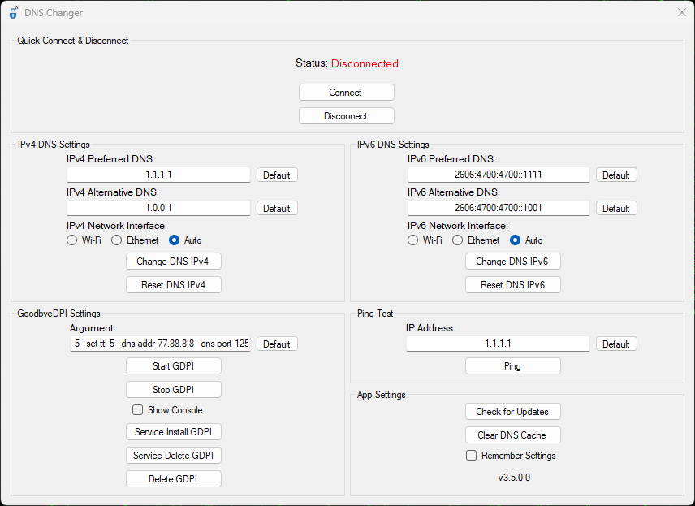

Speed Up and Secure the Internet
Change your DNS addresses, increase your internet speed and protect your privacy with DNS Changer!
Download Source Code
Change your DNS addresses instantly and experience a faster connection.
Protect your data with secure connections.
Easily access restricted sites.
You can download and run the GoodbyeDPI tool to bypass DPI-based blocking.
Status: Displays the current connection status (e.g., Connected / Disconnected).
Connect: Applies the selected DNS settings and starts GoodbyeDPI.
Disconnect: Resets DNS settings and stops GoodbyeDPI.
Setting DNS Values: Enter the preferred DNS address (e.g., 1.1.1.1) and the alternative DNS address (e.g., 1.0.0.1).
Network Interface: Choose between Wi-Fi, Ethernet, or Auto to specify which interface to apply settings to.
Applying Changes: Click "Change DNS IPv4" to save the DNS settings. Click "Reset DNS IPv4" to reset the DNS settings to default values.
Setting DNS Values: Enter the preferred IPv6 DNS address (e.g., 2606:4700:4700::1111) and the alternative IPv6 DNS address (e.g., 2606:4700:4700::1001).
Network Interface: Choose between Wi-Fi, Ethernet, or Auto to specify which interface to apply settings to.
Applying Changes: Click "Change DNS IPv6" to save the settings. Click "Reset DNS IPv6" to restore default settings.
GoodbyeDPI is a tool used to bypass internet restrictions.
Argument Settings: The default argument is -5 --set-ttl 5 --dns-addr 77.88.8.8 --dns-port 1253 --dnsv6-addr 2a02:6b8::feed:0ff --dnsv6-port 1253. Adjust this setting if needed.
Managing GoodbyeDPI: Click "Start GDPI" to start GoodbyeDPI, and click "Stop GDPI" to stop it. Enable "Show Console" to view the GoodbyeDPI console.
Service Management: Use "Service Install GDPI" to install GoodbyeDPI as a system service, "Service Delete GDPI" to delete the GoodbyeDPI service, and "Delete GDPI" to remove all GoodbyeDPI settings and files.
Enter IP Address: Enter the IP address you want to test (e.g., 1.1.1.1).
Perform Ping: Click "Ping" to check the connection latency.
Check for Updates: Use the "Check for Updates" button to ensure the application is up to date.
Clear DNS Cache: Use "Clear DNS Cache" to clear the DNS cache.
Save Settings: Check "Remember Settings" to save your changes.
Version Info: The current app version is displayed at the bottom (e.g., v3.5.0.0).
Lead Developer
DNSChanger is a tool that allows you to easily change your DNS addresses to improve your internet speed and protect your privacy.
DNSChanger generally does not increase ping. However, selecting the right DNS addresses can result in a faster connection and lower latency.
No, DNSChanger does not contain any harmful software and is completely safe.
No, DNSChanger is not a virus. It is an open-source and secure tool. VirusTotal
Yes, DNSChanger is safe. Its source code is open to the public and contains no malicious software.
Refer to the user guide. For more information, click here.
To uninstall DNSChanger, press the Delete GDPI button and delete the DNSChanger.exe file. This will successfully and cleanly remove it.
To update DNSChanger, you can use the Check for Updates button in the application for automatic updates or manually download the update from its GitHub page.
GoodbyeDPI is a tool used to bypass DPI (Deep Packet Inspection) based blocking. It is designed to circumvent internet censorship and access restrictions.
GoodbyeDPI manipulates packets to disable DPI blocking techniques and ensures proper routing of internet traffic.
No, GoodbyeDPI does not have any harm. However, users should adhere to local laws and regulations while using this tool.
Yes, GoodbyeDPI is safe. The tool is open-source and does not contain any malicious software.
First, note that the issue is usually not caused by the application or the GoodbyeDPI software. It is generally due to your personal computer or internet service provider.
Follow these steps to resolve the issue:
1. Download and install the Cloudflare WARP application on your personal computer.
2. Open the Cloudflare WARP application.
3. Select WARP-enabled 1.1.1.1 and connect.
4. Open the restricted site's application.
5. Open the DNSChanger application.
6. In the IPv4 DNS Settings section, select your internet interface (Ethernet or Wi-Fi).
7. In the IPv4 DNS Settings section, click the Change DNS IPv4 button.
8. In the GoodbyeDPI Settings section, click the Start GDPI button.
9. Disconnect from WARP-enabled 1.1.1.1.
10. Close the Cloudflare WARP application.
11. The issue should be resolved.
12. If the problem persists, contact Swotch.
Click on the Stop GDPI and Delete GDPI buttons. If the issue persists, please delete the folder named goodbyedpi-0.2.3rc3-2 located at C:\Users\YourUsername\AppData\Local\Temp.